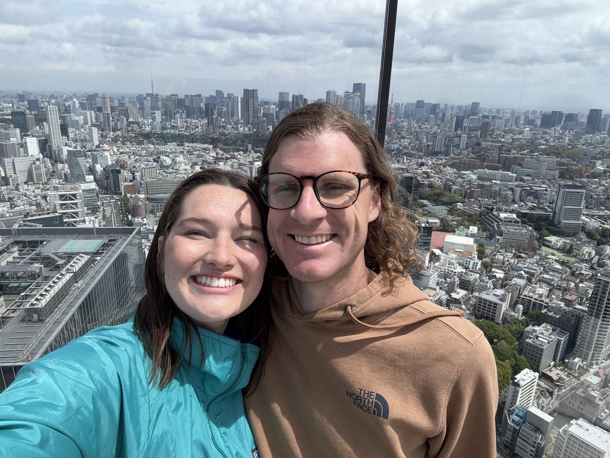

10 days · cherry blossom season
私たちの東京Our Tokyo
Zach and Sarah, ten days in Tokyo at the very peak of sakura — home base in Shibuya, one slow night in a Hakone onsen, and a lot of conveyor-belt sushi. This is the trip we tell people about, plus everything we'd hand you before you booked your own.

Where to start
Six ways in
However you like to plan a trip — by story, by logistics, or by "just tell me where to eat" — start wherever suits you.